跟卡內家約在第一天的民宿－後湖水月
距離花蓮市區大約40分鐘左右的距離，比起海灣32，比較不方便
但海灣太熱門了，第一晚已經客滿，不然其實打算連住兩天，也省去換民宿的時間
不過醬也不賴，畢竟帶狗狗能住的也不多了，都試試也好！哈哈

打算先找老闆報到，沒想到一上台階就看到這位老兄的臉，害我跟醬麻同時定格....
我：『呃....醬麻，他這臉誰敢上去啊！』
醬麻：『對啊！只寫不能摸應該可以上去吧！？』
不要說自己也養狗了，看到陌生的狗狗配上這臉，我們也是會挫的好ㄇ
我說扁嘴兄真的是枚稱職的看家犬

呆了一會，出來一位婆婆跟我們說不要摸他&進入他的地盤 (他身後那一區)
扁嘴就不會攻擊！？
然後叫我們穿拖鞋後就可以進來，可可可是~那個拖鞋就在他的後面啊～～婆婆
好啦！其實他只是不愛笑？不然也很可愛啦！

另一隻店狗小花，很nice的狗狗，跟三隻都可以玩在一起，但也黏TT啊！
為了找卡內居然在門口守了一夜～

柯基威力，講到後湖水月，好多人第一個就問到他！哈哈哈
他超難拍的，很會閃鏡頭，可是我還是拍到可愛的威力啦！

水月居包棟，樓下是雙人房，醬家住，有扁嘴看著安全無慮！

從旁邊的樓梯上去是雙卡寶貝同住的四人房，猛哥扛瓦斯桶上樓先

四人房極度寬敞，雙卡在這追趕跑跳都沒問題，反正樓下住的是自己人，惡劣！
我們很乖，在攝影師到達之前，保留完整的房間給他拍
不然我好想跟醬阿杯一樣，直接噗床打滾 

基本設備都有，只是無線網路訊號超弱...我的唉鳯幾乎都抓不到，
文明病愈來愈重惹我，又不能上網又不能滾床，只好跟卡卡一起找樂子
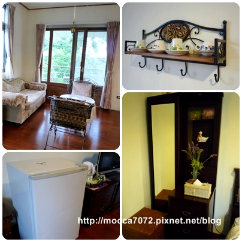
登楞！有個小陽台隨時可以聽到小鳥的聲音，小鬼耳朵靈的很
一聽到就迫不及待要老木開門，但其實這次我有被小鳥蝴蝶給惹惱到，後續再聊...

樓下的鄰居泥們好哇！大頭鑽出欄杆外喔科的，很怕他整隻掉下去，用雙腿夾緊緊
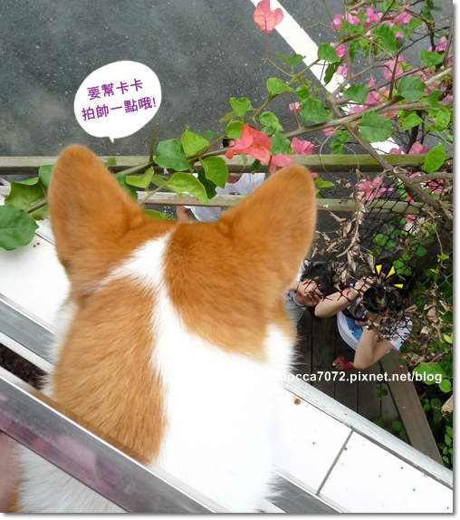
等了一下，卡內家到嘍！派出孝順的猛哥幫忙搬東西
這是他們一家的行李，不要看醬，它超重的！
不往前傾一點，整個人就會往後仰，變翻不了身的烏龜...噗！
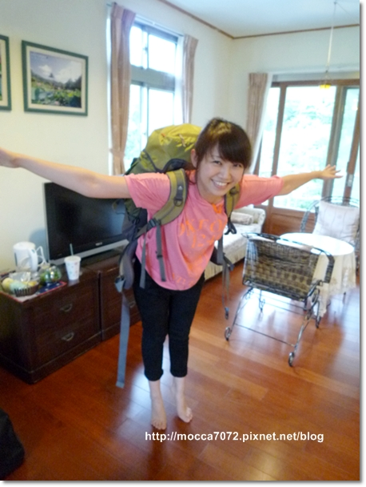
=========０５１５隔天一早============
隔天一大早，我那可愛的兒子，坐在沙發上望窗外欣賞大自然美景
(卡內麻每次看到他醬，都很想揍他，實在是太會享受的小狗惹)
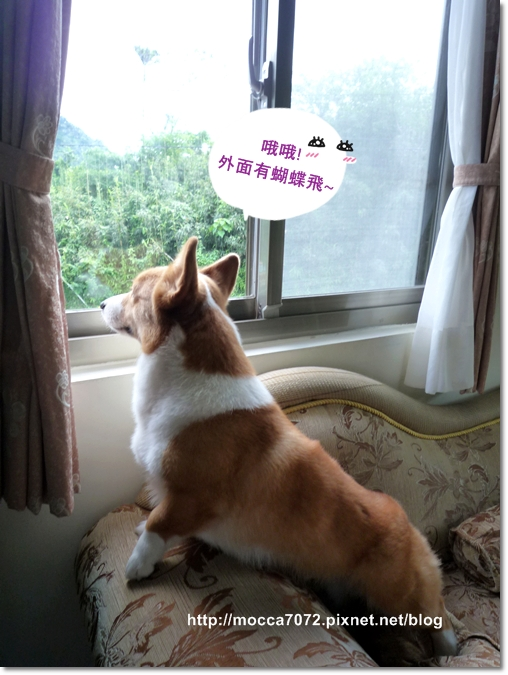
打擾一下還被他"青".....皮在癢惹~
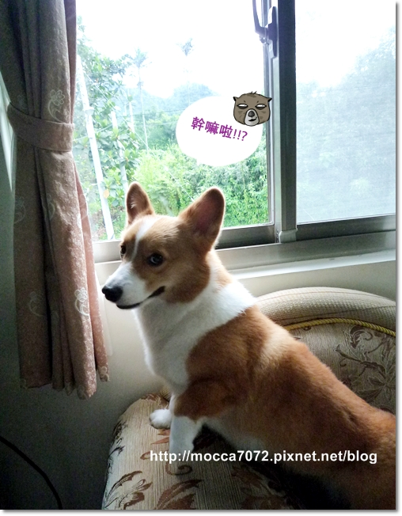
林母卡后有事找你啦！要幫你畫漂釀，等一下要下樓跟醬董說咕摸寧
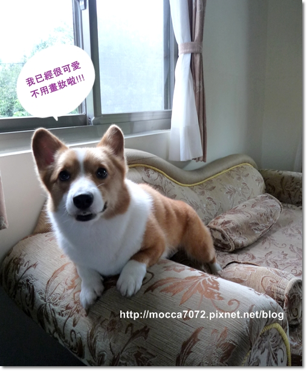
一早林母卡后在畫妝，把卡卡推過去請她幫忙補一下眼線，哈哈哈
我超想看看卡卡變超濃眼妝是什嘛樣子.gif")

有了卡內家加入後，居然就真的不太下雨，還誇張到出大太陽耶！你說這神不神奇
沒想到還有機會在後湖水月的草地放風

旁邊是三間獨棟別墅villa，感覺就很放鬆有渡假的fu
這裡的生態環境很不錯，有魚有鴨有蝴蝶有花，卡卡在這裡開心度破表！
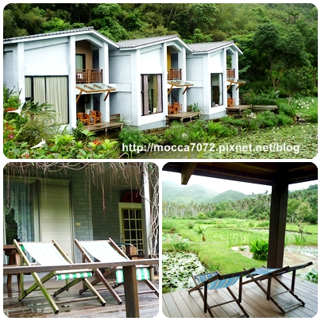
陪著拔拔在躺椅上放空，這次覺得猛哥沒帶相機也好，
至少這次讓他好好的放鬆好好的玩，有時候為了拍照都無法好好純娛樂
因為他.....是一個無法一心多用的傢伙，哈哈哈哈

池塘的睡蓮，剛去的時候還是花苞的狀態，展開的速度隨著陽光也愈來愈快
用肉眼都可以很明顯看到它的變化
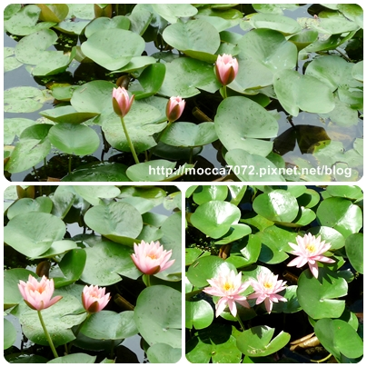
一旁的醬麻突然興緻來了想強吻醬拔！？
(這不是晚上的事兒ㄇ)

因為椅子被我們家父子倆坐滿了，所以要醬拔抱抱
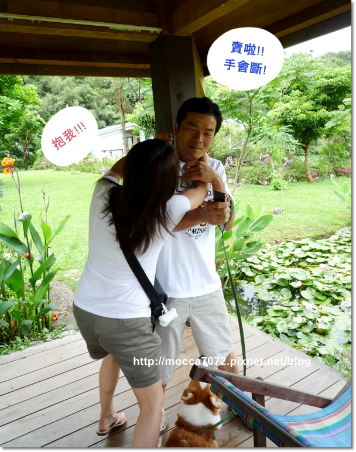
當女人轉頭要走的時候，想活命的男士請千千萬萬要拉住不能放啊！ 
女人心海底針～你讓女生默默的"巴酷回來"，下半輩子準備在輪椅上過吧你？ㄎㄎㄎ
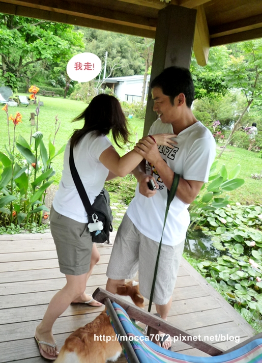
醬拔是好男人吶！還是甜蜜的跟老婆大人合照，後面那隻手在幹嘛我就不知道惹...

把剛從綠島偷渡回來的大哥踹下池塘就準備去吃早餐啦！(誤) 

早餐是不是看起來很養生呢!營養很完整耶~ (笑)

自製的桑葚果醬沾吐好好吃，南瓜牛奶也不錯

威力小子這時候就很好拍啦！一直卡在猛哥的"該邊"痴痴等
可年小傢伙，我想他這輩子都不會知道，他老木幫他掛的牌子就是害他不能吃的兇手

看看後面的藍天白雲，還有小狗們睜不開的雙眼
各位捧油，樂觀是對的，人生還是有可能出現奇蹟的嘛！哈哈哈

要離開了，小花很捨不得，一路追著卡ㄋㄟ好長一段路
可我記得小花是女生啊，怎嘛也中了娘砲大法

謝謝民宿老闆娘熱情招待，希望帶狗入住的客人都是有品的好客人！
天氣大好，我們要前往慕谷慕魚衝今夏第一游啦！
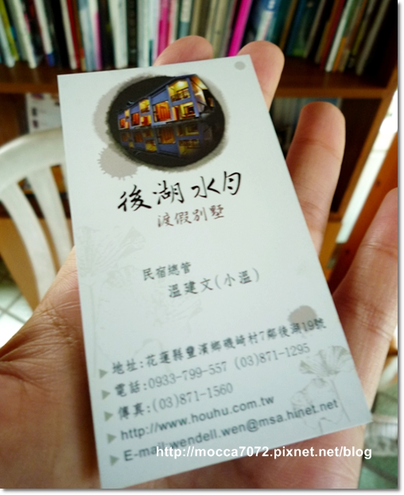
後湖水月
http://www.houhu.com.tw/
電話：0933-799557(AM8:00~PM10:00)
地址：花蓮縣豐濱鄉磯碕村7鄰後湖19號